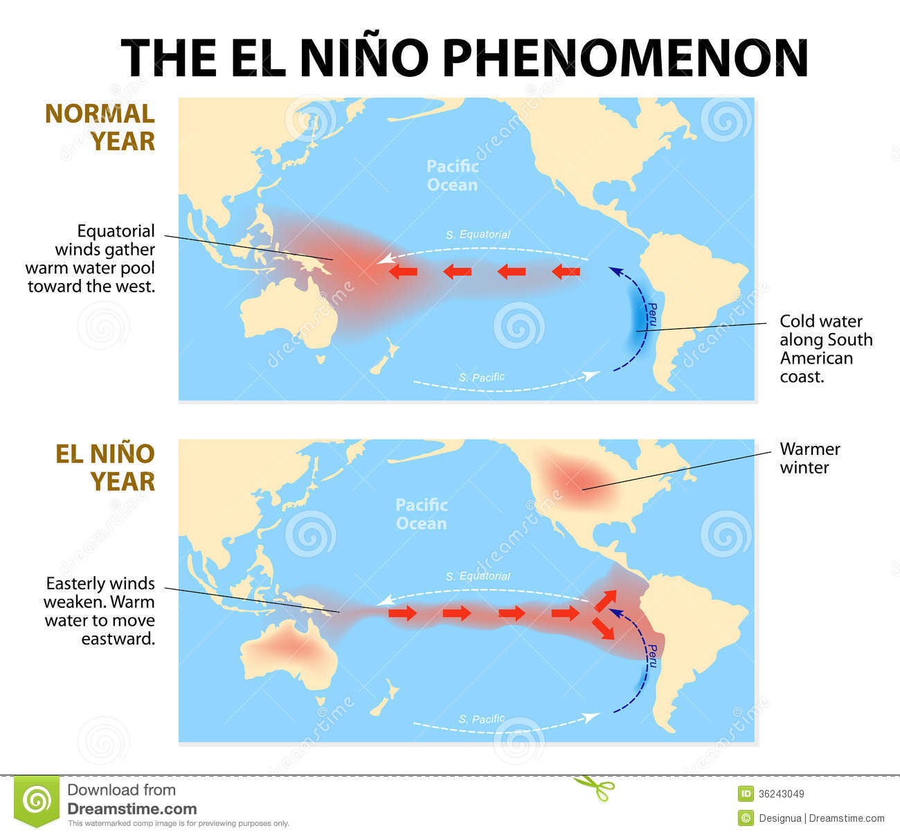

Weather and Climate App
အယ္နီၫို

အီေကြတာပစိဖိတ္သမုဒၵရာေဒသ၏ပင္လယ္ေရမ်က္ႏွာျပင္အပူခ်ိန္ႏွင့္ေရေအာက္အပူခ်ိန္မ်ား ပုံမွန္ျဖစ္ၿမဲထက္ပိုမိုပူေႏြးကာကမၻာ့ေျမာက္ဘက္ျခမ္းႏွင့္ေတာင္ဘက္ျခမ္းေဒသမ်ားမွကုန္သည္ ေလမွန္မ်ား၏ေလစီးႏႈန္းပုံမွန္ထက္ေလ်ာ့နည္းျခင္းႏွင့္ပစိဖိတ္သမုဒၵရာအေရွ႕အေနာက္ေလထု ဖိအားလႊဲခ်ိန္ေျပာင္းလဲမႈမ်ားျဖစ္ေပၚျခင္းစသည့္အေျခအေနမ်ားသည္အယ္နီၫို(El nino)ရာသီ ဥတုျဖစ္စဥ္ျဖစ္ေပၚျခင္းႏွင့္ဆက္စပ္ေနေသာလကၡဏာမ်ားျဖစ္ပါသည္။ ပုံမွန္အားျဖင့္(၇)ႏွစ္လၽွင္တစ္ႀကိမ္ခန္႔ျဖစ္ေပၚေလ့ရွိၿပီး၊ခရစ္စမတ္ကာလမ်ားအတြင္း အားအေကာင္းဆုံးျဖစ္တတ္ကာအခ်ိန္ကာလအားျဖင့္(၁)ရာသီမွ(၁)ႏွစ္ခန္႔အထိၾကာျမင့္ႏိုင္ၿပီး ေလထု ႏွင့္သမုဒၵရာအျပန္အလွန္အက်ိဳးသက္ေရာက္ေစလ်က္ပုံမွန္ျဖစ္ေပၚရမည့္ေလထုဆိုင္ရာ လကၡဏာမ်ားအေပၚေျပာင္းျပန္အက်ိဳးသက္ေရာက္မႈျဖစ္စဥ္ကိုအယ္နီၫိုဟုသတ္မွတ္ၾကသည္။ အယ္နီၫိုျဖစ္ေသာႏွစ္တြင္မုတ္သုံကာလ၌မုတ္သုံမိုးညံ့ၿပီး၊မုတ္သုံလကၡဏာမ်ားေပ်ာက္ေနျခင္း၊ ေလတိုက္ခတ္မႈပုံသ႑ာန္ေျပာင္းျခင္း၊ပ်ံက်မိုးမ်ားသာ႐ြာျခင္း၊မိုးအားေလ်ာ့နည္းျခင္း၊မုန္တိုင္း ျဖစ္ေပၚမႈ မူမမွန္ျဖစ္ေစျခင္းစသည့္သက္ေရာက္မႈမ်ားကိုခံစားရေစပါသည္။
ဆက္သြားရန္
ေနာက္ျပန္သြားရန္
ေရွ့သို႔